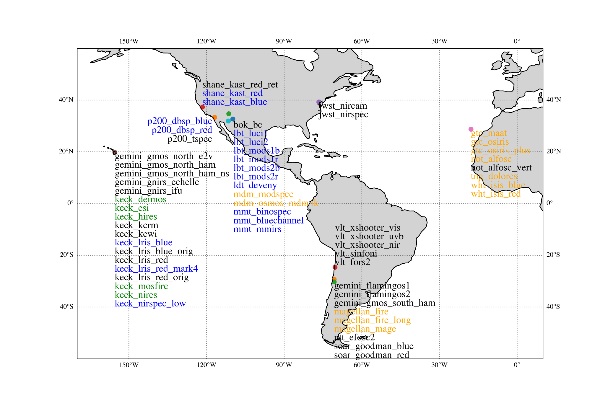
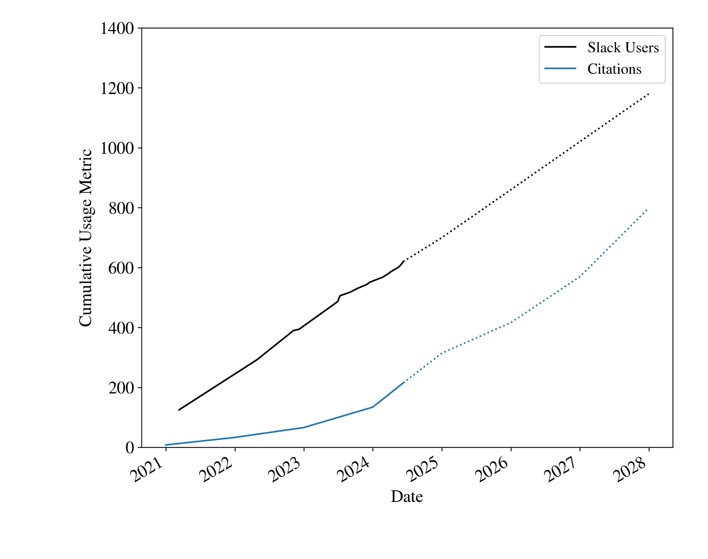
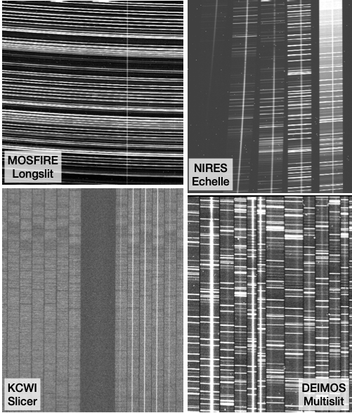
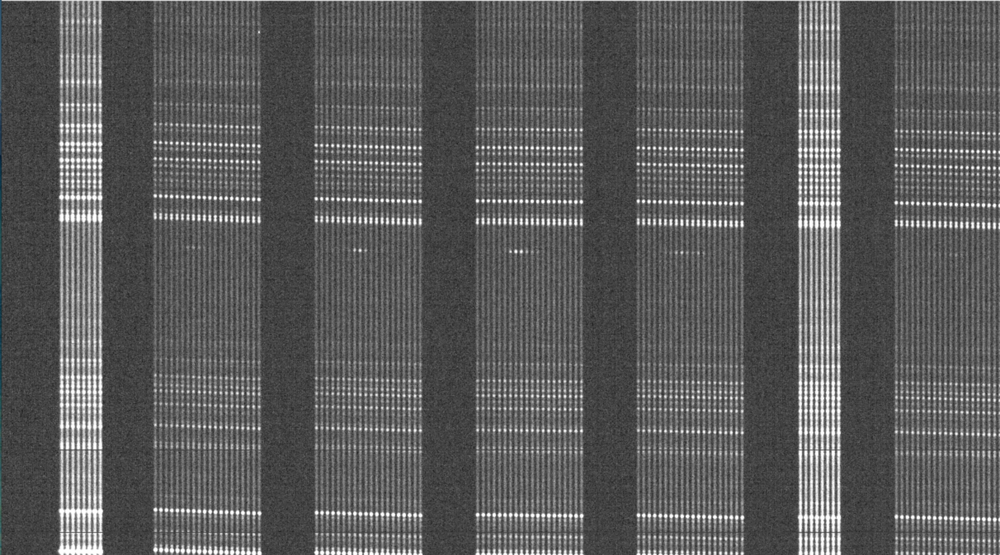
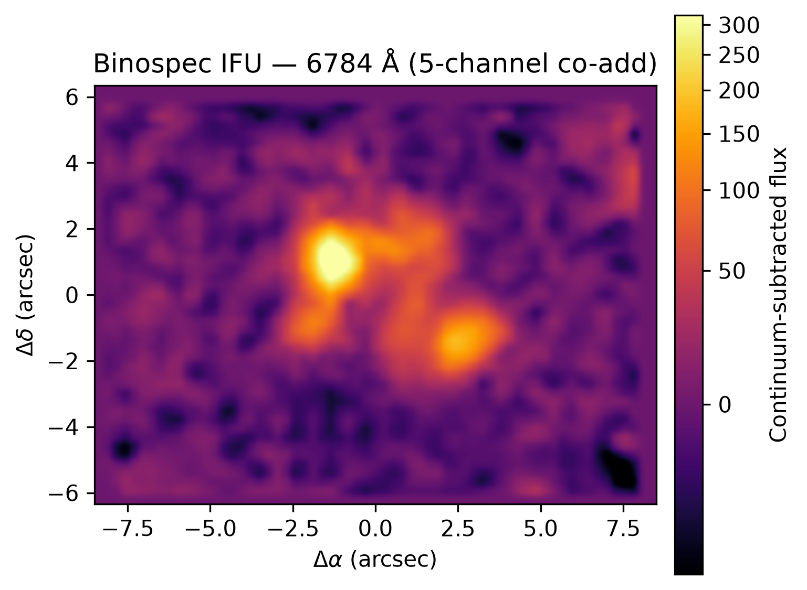
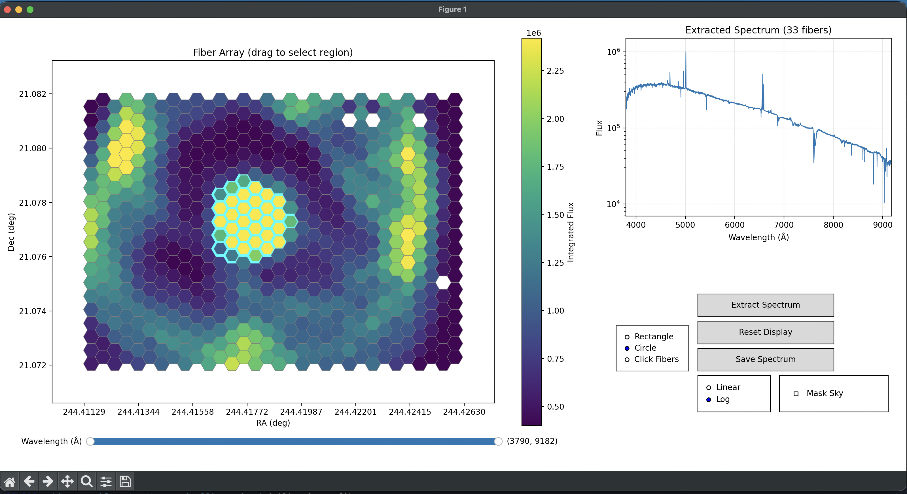

Overview
PypeIt (pronounced “pipe it”) is a Python package for semi-automated processing and reduction of optical / near-IR spectroscopic data. Designed as a general-purpose pipeline, it currently supports over 60 spectrographs on 18 telescopes. Its algorithms build on decades of development from earlier pipelines to produce robust, science-grade data products.
With version 2.0, PypeIt has entered a more mature stage of development: a codified governance structure, a better-defined software versioning system, and a more consistent release schedule. Ongoing efforts — aided by an award from the NSF Pathways to Enable Open-Source Ecosystems (POSE) program — work more closely with supported facilities to improve reliability and performance.
PypeIt Across the Globe

Community & Impact

Why PypeIt?
- Open source — freely available and openly developed.
- Built on the widely-used scientific Python software stack.
- Community-developed & supported — functionality updates immediately benefit every supported spectrograph; twice-yearly user workshops.
- Robust noise modeling and photon-limited sky subtraction.
- Builds on decades of algorithmic development from legacy pipelines.
One Pipeline, Many Instruments

Development & Roadmap
Broad goals: support more modes & spectrographs; richer interaction with and interrogation of outputs; greater modularization of core methods; and better support for cloud computing and archiving of reduced data products.
Current release — 2.0.1
- Dependency updates
- Run individual calibration steps (useful for testing)
- Improved 1D spectrum viewer
- Various bug fixes
Upcoming — 2.1.X
- Low-level code refactoring
- Python 3.14 support
- Run sky-subtraction and extraction steps separately
- Improved Binospec reductions
- Quicklook viewer (see Paper 14155-131 by Brodheim et al.)
- Various bug fixes
Upcoming Spectrograph Support
- MMTO — Binospec IFU (optical fiber-fed IFU) and ARIES (AO-fed near-IR long-slit/echelle).
- ARC 3.5-meter — KOSMOS (optical long-slit and slit-mask), TripleSpec (near-IR 5-order medium-res long-slit), and ARCES (optical echelle).
- LDT — RIMAS (near-IR, long-slit and echelle).
- VLT — ERIS NIX (near-IR, long-slit) and UVES (optical echelle).
- SOAR — TripleSpec (twin of ARC's TripleSpec).
- Palomar 200-inch — NGPS (four-channel optical long-slit).
Spotlight: Binospec IFU
The Binospec IFU uses a special slit-mask to sample a 16.5" x 12" science field with 640 fibers fed by hexagonally-packed lenslets. There is one small spatially offset sky field that feeds an additional 80 sky fibers. The spatial elements (spaxels) are 0.6" across on the sky, 0.8" corner-to-corner, with almost 100% filling factor. The spectral resolution and coverage is roughly similar to using a 0.7″ wide longslit.
Binospec IFU is the first fiber-fed spectrograph supported by PypeIt. It required some significant changes that will hopefully pave the way for supporting other fiber-fed spectrographs and IFUs in the future. The PypeIt support includes tools for building datacubes and interactively extracting and co-adding fiber spectra.



Get Started
pip install pypeit
pypeit.readthedocs.io
PypeIt Users Slack